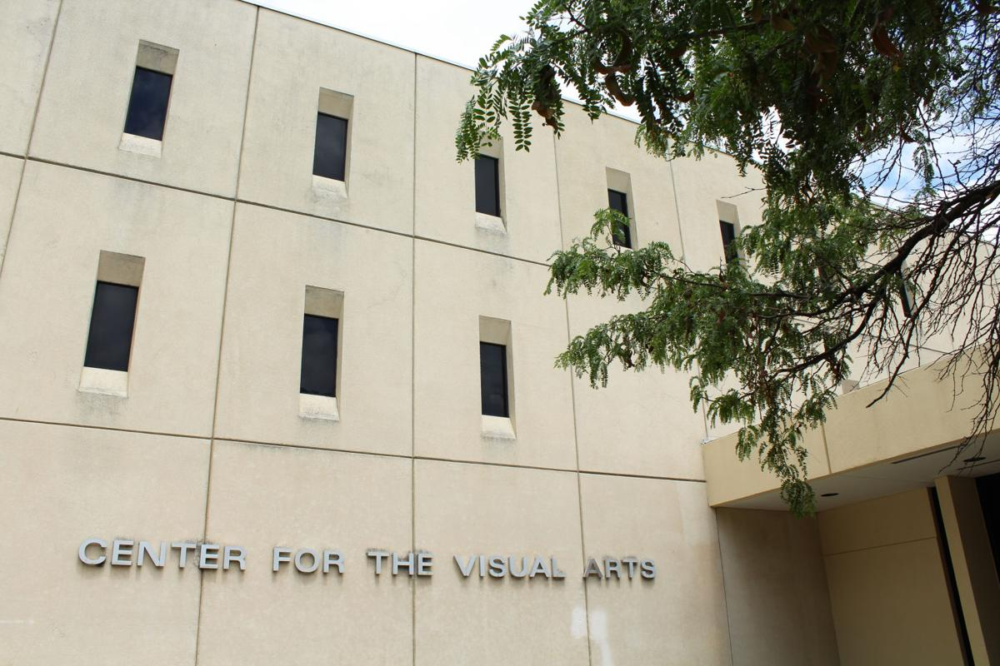

Students will be allowed to continue in the major if they maintain a minimum GPA of 2.0 in all courses required for the major. Students who fail to meet this requirement will be placed on academic probation and will be required to meet with their academic advisor to develop a plan for improvement.
High Achieving students may be eligible to participate in the Accelerated Creative Technologies sequence, which allows students to complete the major in a shorter time frame. Students must have a minimum GPA of 3.5 and receive approval from the program director to enroll in this sequence.
The Audio and Music Production sequence focuses on the technical and creative aspects of audio production, including recording, mixing, and mastering. Students will gain hands-on experience with industry-standard equipment and software, preparing them for careers in music production, sound design, and audio engineering.
The Game Design sequence focuses on the design and development of video games, including game mechanics, level design, and storytelling. Students will gain hands-on experience with industry-standard game engines and development tools, preparing them for careers in game design and development.
The Interdisciplinary Technologies sequence provides students with a broad foundation in multiple technological fields, allowing them to explore various areas of interest and develop versatile skills for careers in emerging technology sectors.
For more information: